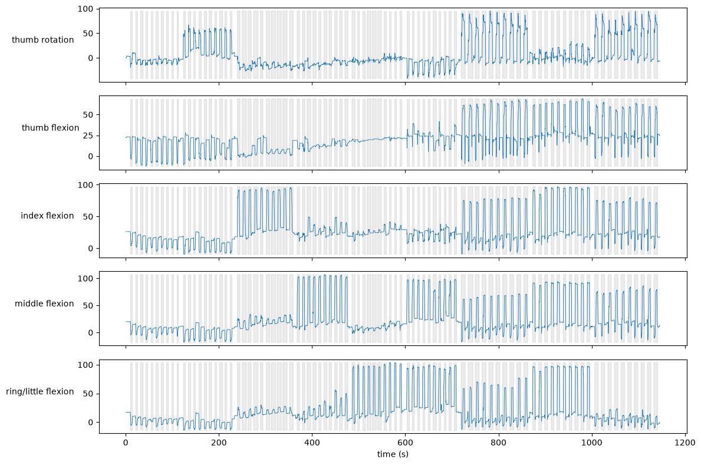
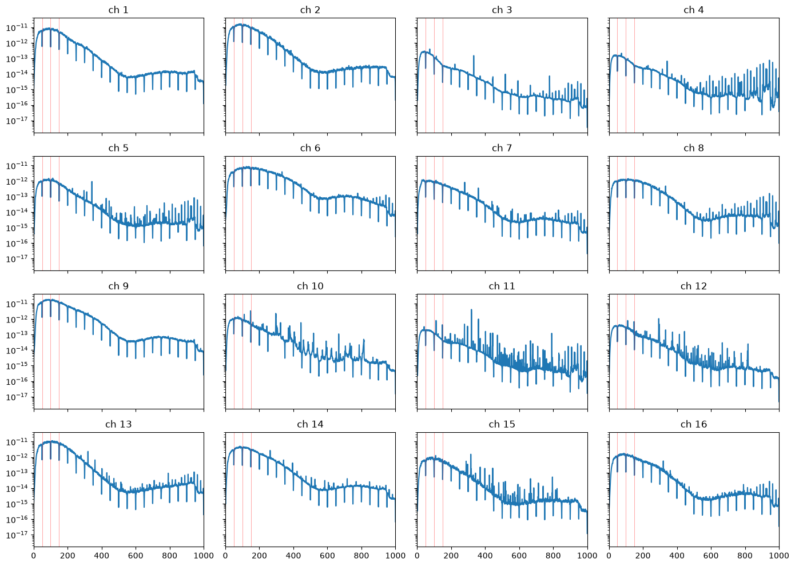
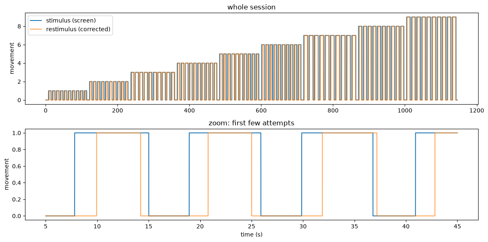
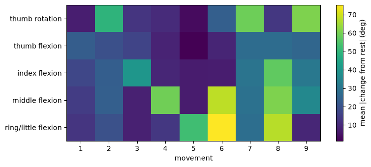
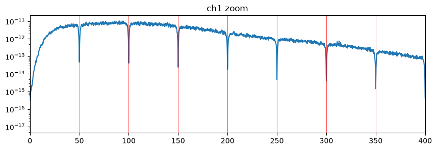
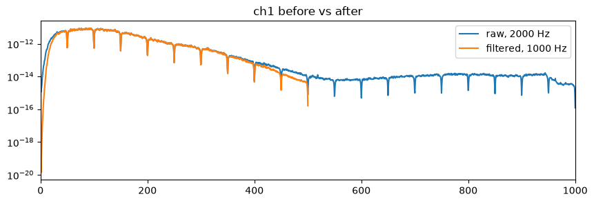
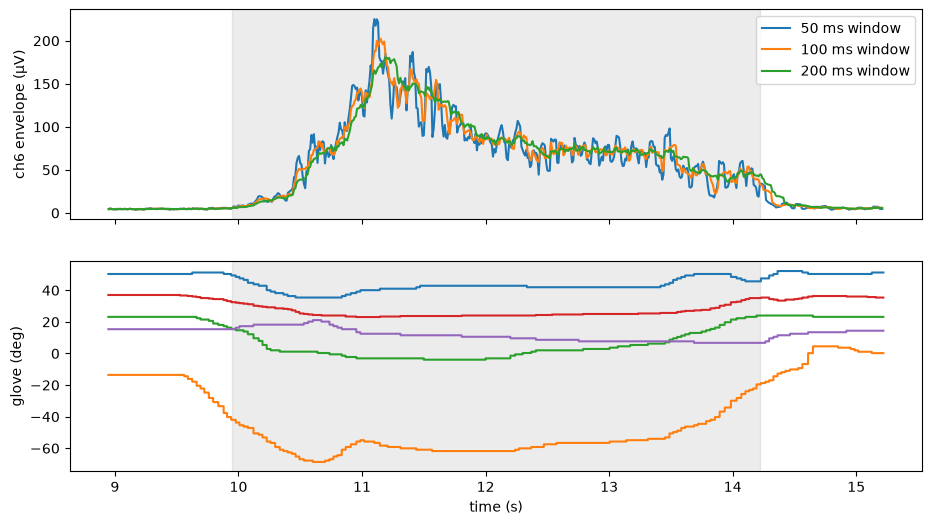

A hand that answers late feels broken
A below-elbow amputee still has the forearm muscles that used to move the fingers. A myoelectric hand reads their electrical activity (EMG) through the skin and turns it into movement. It has to be right, and it has to be on time.
Prosthesis research puts the delay a controller can spend at about 100 to 125 ms before users notice the hand lagging[7]. A decoder spends that budget in two places. It needs a stretch of past signal to average, because one instant of EMG is noise. And it needs time to compute.
There is one way to buy time back: predict ahead. Muscles fire tens of milliseconds before force appears[8], so a decoder can aim at where the fingers will be, to offset its own delay.
Our question: how do the amount of past signal the decoder reads (the window) and how far ahead it predicts (the horizon) trade accuracy against responsiveness?
Nominal lead, a design budget
nominal lead = horizon − estimated processing delay
processing delay = filters + about half the window + compute
Positive: the horizon covers the processing delay, with the remainder left for motors. It is a budget, not a measured lead, because the labels in this dataset come from the other hand.
What one row of our data is
One row is one 10 ms frame for one person. Its inputs are summaries of the muscle activity on each forearm sensor, computed only from the past. Its target is five finger angles at the same instant, or up to 150 ms later. There are 3,058,471 such frames. Neighbouring frames overlap almost completely, so the independent units are the 2,376 movement repetitions (12 people, 22 repetitions, 9 movements).
Twelve people, sixteen sensors, and a glove on the other hand
We use NinaPro DB8[1], a public benchmark built for regressing finger position from EMG. It is one of the few open datasets that includes amputees.
- 12participants: 10 able-bodied, 2 transradial amputees
- 16EMG sensors in two rings around the right forearm
- 9finger movements and grips, plus rest
- 3sessions per person: 10, 10 and 2 repetitions
- 5finger angles to predict, from an 18-sensor glove
- 3.06 Mframes of 10 ms after our processing
The detail that shapes everything
Participants performed each movement with both hands at once. The EMG comes from the right forearm. The finger angles come from a glove on the left hand.
The reason is the amputees: they have no right hand to put a glove on, so they move their phantom hand while the intact hand is recorded. For that group, a mirrored hand is the only label that can exist.
The cost is that the label and the input come from two separate commands, one from each side of the brain. They agree well in shape and only loosely in time.
How far apart do the two hands start?
Each dot is one repetition: the time between the EMG rising on the right arm and the glove starting to move on the left hand. Inside a single arm, EMG always comes first by tens of milliseconds. Pick a person to see what the data shows instead.
Onsets detected in notebooks/05_leads_all_subjects.ipynb: EMG above its resting mean by 5 standard deviations; glove 5° away from its resting posture; the 25 ms envelope delay added back. 1,980 repetitions were detected. Points beyond ±1,000 ms are drawn at the edge; the most extreme ones sit at the limit of the search range and are probably detection failures. People 11 and 12 are the amputees.
Healthy people asked to move both hands together usually start within tens of milliseconds of each other, each with a consistent leading hand[9]. A prosthesis-training study that tracked both hands of seven people found the mirrored hand off by about 30 ms on average[10]. People 1, 2, 3, 5 and 12 look like that. Person 9's glove hand starts a median 565 ms before the EMG arm, which no muscle physiology explains. It is behaviour (moving one hand, then the other) or a detection effect.
What we concluded. EMG's head start over movement exists, but it cannot be measured in this dataset: it is mixed with a hand offset of unknown size. So we never present a timing result as "EMG leads by X ms". Horizon results are comparisons between models scored on the same labels.
Quality issues we found, and what we did about each
Labels come from the opposite hand
Per-person offsets from +45 to −565 ms, plus scatter of ±100 ms or more per repetition. Treated as a measured error source; see limitations.
The glove updates at 25 Hz, not the documented 100 Hz
The stored signal is a staircase with 40 ms steps. The dataset paper confirms 25 Hz[1]. Four consecutive frames often share one target.
Stored at 2 kHz, recorded at 1,111 Hz
Nothing above 555 Hz is real. Upsampling left a faint image up there, which must be removed before changing the rate.
Mains hum was already removed
The spectrum shows dips, not spikes, at every multiple of 50 Hz. No notch filter needed: one filter and one delay fewer.
Amputees have empty channels
Person 11 has 13 working sensors and person 12 has 12. The rest are all zeros. We flag them so no model reads them and no normalisation divides by zero.
Resting posture drifts
Person 1's relaxed thumb sits anywhere from about 5° to 22° while the muscles are quiet. No EMG decoder can explain that. Across the test sessions the spread in resting posture averages 4.3° for the able-bodied group.
Movements are recorded in blocks
All repetitions of movement 1, then all of movement 2. Fatigue is tangled with movement type, so we test on a separately recorded session.
Some sensors barely respond
Sensors 3, 4, 11 and 12 of person 1 hardly change between rest and movement. Sensors were placed evenly, not on chosen muscles.

notebooks/07_targets.ipynb.Source, size and key variables
NinaPro DB8 is hosted by the NinaPro project and the Newcastle University data repository[2]. Each person has three MATLAB files, about 1 GB for a long session. We do not redistribute the data.
| Variable | Columns | What it is | Used as |
|---|---|---|---|
emg | 16 | Surface EMG, Delsys Trigno sensors, right forearm | Input |
glove | 18 | CyberGlove II joint sensors, left hand | Target, after mapping to 5 angles |
restimulus | 1 | Movement label, timing corrected to the actual movement | Segmenting, phases |
rerepetition | 1 | Repetition number | Splitting train and validation |
acc, gyro, mag | 48 each | Motion sensors inside the EMG sensors | Not used: the forearm moves little in these finger tasks, and the planned ablation was not run |
The five targets (thumb rotation, thumb flexion, index, middle, ring and little together) use the fixed linear mapping published with the dataset, so our numbers are comparable with other papers.
Spectra of all 16 sensors, and the corrected movement labels

notebooks/02_spectrum.ipynb.
stimulus marks when the video played; restimulus was corrected afterwards to when the person moved, about two seconds later here. We use the corrected one everywhere. From notebooks/04_envelope.ipynb.Which finger moves in which movement

notebooks/07_targets.ipynb.Every processing step is causal, and every delay is measured
A real hand cannot see the future, so no step may use future samples. And because our question is about delay, the delay each step adds is part of the result.
Raw EMG
A 2 kHz file of a 1,111 Hz recording. Swings around zero; the size of the swings is the muscle effort.
Low-pass, 450 Hz
Fourth-order Butterworth. Removes the upsampling image so it cannot fold back when the rate is halved.
0.8 to 1.2 msDown to 1 kHz
Keep every second sample. Half the data, nothing useful lost.
0 msHigh-pass, 20 Hz
Second-order Butterworth. Removes slow skin and cable artefacts.
0.1 to 2 msEnvelope
Root-mean-square over the last W ms: one effort value per sensor.
about W/2: 25 to 100 msFrame
One value every 10 ms, paired with the five finger angles.
Filter delays are group delays measured at 50 to 300 Hz in notebooks/03_filters.ipynb. The high-pass reaches 6 ms at 30 Hz, where there is little EMG power.


Feel the window trade-off
A muscle switches on at 1.0 s and off at 2.2 s. Drag the window length. A short window reacts quickly and jitters. A long one is smooth and late: it reaches half height about half a window after the muscle did.
- rectified EMG
- envelope the decoder sees
- true muscle effort
Synthetic signal, generated in your browser to explain the effect: random noise scaled by a known effort curve, then the same causal moving RMS as src/emgproc.py. The real thing is in the figure below.

notebooks/04_envelope.ipynb.Choices, and why
| Choice | Why |
|---|---|
Forward-only filtering (sosfilt), never filtfilt | Zero-phase filtering runs backwards over the signal, so every output uses future samples. Impossible in a device, and it would quietly leak the future into a project about delay. |
| Butterworth filters, low order | Flat in the band we keep, so the envelope measures true effort. Low order keeps the delay at 1 to 3 ms. |
| Cut at 450 Hz, not 500 Hz | Filters fade out gradually. The gap leaves room to fade before the new 500 Hz limit. |
| Windows of 50, 100 and 200 ms | They span the range from "reacts in 25 ms" to "as smooth as most published decoders" (128 ms is common). |
| Nothing learned in preprocessing | Filters and windows are fixed numbers, identical for train and test. Scaling statistics are learned later, from training sessions only. |
| Empty channels flagged, not dropped | The file format stays the same for all 12 people, and each model reads only that person's working sensors. |
The main finding of this stage: filters cost 1 to 3 ms, the window costs 25 to 100 ms. The speed question is a window question.
Six steps from "nothing changes" to a decoder with memory
Each step was taken because of what the previous one got wrong. All models are fitted separately for each person.
-
1
Baseline: persistence
The simplest forecast: the finger will be where it is now. No EMG, no learning. On this dataset it is off by only 0.68° at 100 ms, because fingers are still 79% of the time and it is handed the current angle for free.
What it taught us: there are two different tasks, and their numbers must not be mixed. Task 1, EMG alone to finger posture, is what published papers do. Task 2, current angle known and EMG used to forecast, is what a hand with position sensors would do.
-
2
Ridge regression, and the assumption behind it
We chose ridge because we expected the 16 sensors to overlap: neighbours sit over the same muscles, and plain least squares turns near-duplicate inputs into huge opposite weights. Ridge's penalty keeps the weights small.
The bias–variance check said keep it
Person 3, model refitted 30 times on resampled repetitions. Across the penalty range, variance fell from 11 to 0.04 deg², while bias² stayed near 169 deg² until the penalty became strong (376 deg² at the extreme). Around the tuned penalty the variance reduction is almost free.
Then we measured the overlap itself
Correlation between pairs of inputs, person 3. The sensors are nearly independent. The duplicates were our own features.
So the assumption was wrong in a helpful way. Each sensor carries its own information, which is good for decoding. Ridge was still earning its keep, on the copies we had created: two summaries of the same sensor (RMS and MAV, 0.98) and overlapping snapshots in time (0.74).
The same plot carried a warning. Bias is about 15 times larger than variance, even with no penalty. The model is not overfitting; it is too simple. No choice of penalty fixes that.
Memory helps more than a longer window
R² as the ridge model is given older snapshots of the envelope (100 ms window, able-bodied). History adds context, not delay.
Result
With 1.5 s of history: MAE 9.2° to 9.4°, R² 0.51 to 0.55 across the three windows. Going from a 200 ms to a 50 ms window costs 0.23° and saves 75 ms of delay. Without history the window matters about three times more (R² 0.35 to 0.43).
Thumb rotation is the hardest finger (R² 0.43), ring and little the easiest (0.73).
What it taught us: the decoder needs to remember what the muscles did a second ago, and it needs a form a straight line cannot give.
-
3
Tell the model where the finger is
For Task 2 we added the current angle as an input. The fitted model (checked on person 3) is close to: future angle = 0.99 × current angle + a correction computed from EMG.
During movement the correction helps: 2.35° against persistence's 2.69° at 100 ms. When the fingers are still, it hurts. Resting EMG is never perfectly flat, and a linear model turns every wobble into a small movement that never happens: 0.94° error during holds, against 0.25° for doing nothing.
What it taught us: the correction is right when the hand moves and should be silent when it does not.
-
4
Three states, and trees to tell them apart
Rest
Relaxed between repetitions. Should stay at the rest posture.
Hold
Posture reached and kept. Should freeze the current angle.
Moving
Any finger faster than 20°/s. The only state where EMG should change the output.
Hold is the trap. After the burst that moves a finger, the EMG decays to a low level while the finger stays bent. A linear model reads "less EMG" as "smaller angle".
Sketch of what we measured, not a recording: during holds the EMG-only ridge estimate sat 58% to 68% of the way from rest to the true held angle (four people: 1, 3, 5 and 8). Treat a hold as rest and the estimate sags back. Treat it as movement and the correction keeps nudging a finger that is not moving. "Low EMG, but not resting: keep the angle" is an if-then rule. Decision trees are made of if-then rules, so we put a classifier in front of the regression: gradient-boosted trees read the EMG and output the probability of each state. The prediction becomes
future angle = current angle + P(moving) × ridge correction
The gate is soft on purpose. A device on a person's arm should not snap between behaviours; if the classifier is 70% sure, 70% of the correction is applied. We compared it with a simpler hand-set deadband that ignores small corrections, with its threshold chosen two independent ways (from resting statistics and by validation). The two thresholds agreed, 0.71° against 0.72°.
Chosen on validation data (repetitions 9 and 10 of sessions 1 and 2), able-bodied, mean error over 50 to 150 ms horizons Model MAE Ridge with current angle + tree gate 0.69° Ridge with current angle + deadband 0.71° Persistence 0.75° Ridge with current angle, no gate 0.96° What it taught us: gating works. The tree gate was the best model for 11 of the 12 people with a 100 ms window and 1.5 s of history (10 of 12 with a 200 ms window). With a 50 ms window and only 0.3 s of history it loses its edge and the plain deadband ties it: learned gating needs context.
How separable are the states from EMG level alone?
Area under the ROC curve for one number, the mean envelope across sensors (1.0 is perfect, 0.5 is a coin flip). Rest against hold is easy for most people. Still against moving is harder, and worst for people 7, 9 and 10, the three with the largest hand offsets: part of what looks like poor separability is label timing. Computed on session 3 as a description; nothing was tuned on it.
Person Rest vs hold Still vs moving The tree classifier sees all sensors and their history, and reaches 68% to 90% accuracy depending on the person. Settings: scikit-learn
HistGradientBoostingClassifier, 150 trees, at most 31 leaves, learning rate 0.1, trained on every third frame of sessions 1 and 2. They are defaults, not tuned. -
5
A physics check we did not expect to lose
Before trusting the gated model we tried a forecast with no EMG and no learning: the finger keeps moving at the speed it had over the last 40 ms. A prosthesis gets that from its motor encoders.
It beat every EMG model on Task 2: 0.54° overall and 1.77° during movement, against 0.64° and 2.33° for the tree-gated model. Halving the velocity did slightly better still (0.49°). Even a perfect gate, given the true state, only reaches 0.61°.
What it taught us: for slow movements with a known position, momentum is the best guide to the next 100 ms. The gate was not the weak part; the EMG correction was. EMG's value in this dataset is decoding posture, which is Task 1.
-
6
The final decoder: leaky memory and a nonlinear readout
Steps 2 and 4 named the two things ridge lacks: memory over seconds, and if-then behaviour. The final Task 1 model supplies both, with a physical picture behind it.
Posture as a leaky integral of effort
A burst moves the finger, a smaller effort holds it, tissue slowly pulls it back. So each sensor's 50 ms envelope is smoothed by five leaky integrators, each forgetting at its own rate. All use only the past.
Illustration computed from the definition: response of the five integrators to a 0.6 s burst.
What goes in and what reads it
- Envelope now, plus integrators with time constants of 0.05, 0.15, 0.5, 1.5 and 4 s.
- The same six on the logarithm of the envelope, which stretches the low end where rest and hold live.
- 12 features per sensor: 192 inputs for 16 sensors, 156 and 144 for the amputees.
- Readout: a small neural network (256 then 128 units) and gradient-boosted trees, predictions averaged.
- A causal per-session rescaling of the EMG that uses no labels.
We chose it by cross-session validation: train on session 1, validate on session 2, and the reverse. Same-session validation on five people flattered the neural network (4.6°, R² 0.89): validation repetitions came from the same day and electrode placement, so they hid the day-to-day shift. Across days the chosen combination scored 7.8° and R² 0.70. Session 3 stayed closed until the choice was made.
Result on session 3: MAE 6.39°, R² 0.76 for all 12 people. A linear readout on exactly the same features scores 10.03°: the features are not enough without the nonlinearity.
The whole journey in one chart
Mean absolute error for Task 1 on the test session, able-bodied participants. Lower is better.
The three integrator rows use the same per-session calibration as the chosen model, so the comparison is like for like. With calibration the linear readout is worse than the simpler ridge above it (9.81° against 9.25°).
One test session, opened once
We use the split every DB8 paper uses, so the numbers can be compared directly.
repetitions 9 and 10: validation
repetitions 9 and 10: validation
For the final decoder, validation was across sessions instead: train on one training session, validate on the other.
Never split by random frames
Two neighbouring frames share up to 95% of their window. Put one in training and one in testing and the model has seen the answer. We split by session and by repetition only.
Tune on validation, report on test
Penalties, history length, thresholds and the choice between models all come from sessions 1 and 2. Session 3 is used to report.
Scaling from training data only
Each input is standardised with the mean and spread of the training sessions, then the same numbers are applied to the test session.
Amputees reported separately
Two people are case studies, not a group average. Every table keeps them apart from the ten able-bodied participants.
The metrics, in plain terms
MAE, in degrees
The average size of the miss. "Off by 6° on average." Most DB8 papers report it. We compute it per finger angle and average the five.
R²
Share of the finger movement explained, compared with always guessing the average posture. 1 is perfect, 0 is no better than that guess. Computed per person, then averaged across people.
Error by phase
MAE separately for rest, hold and moving frames. An overall average hides that a model can be excellent when nothing moves and poor when something does.
Worked example: true angles 10°, 20°, 30°, 40°; predicted 12°, 17°, 30°, 45°. The misses are 2, 3, 0 and 5, so MAE is 2.5°. Guessing the average (25°) has squared error 500; the model's is 38; R² = 1 − 38/500 = 0.92.
What a degree means: the fingers here sweep roughly 50° (thumb flexion) to 90° (middle, ring and little). For an index finger 9 to 10 cm long, a 10° error moves the fingertip by about 1.5 cm, a rough geometric estimate.
Integrity notes: where we were not perfectly clean
- While debugging low first scores we looked at session-3 results for people 1 and 5. No setting was chosen from them; the choices that followed (raw instead of log envelopes, 1.5 s of history) were made on validation repetitions.
- The step-by-step findings in the Models section (history helps, the stateful model jitters, momentum wins) are descriptive results on session 3. Model selection for the gates and for the final decoder used validation data.
- Validation chose the per-session calibration. On the test session the model without it was slightly better (6.15° against 6.39°). We report the chosen model as the official number; switching after seeing the test would be selecting on the test set.
- The 1.5 s history cut-off was a judgement call: gains were shrinking, and longer history risks learning the fixed rhythm of the protocol. We later checked that risk on the final model (see error analysis).
- Tree settings are library defaults and were not tuned. The neural network's settings were also fixed once; it stopped at its 60-epoch limit with a convergence warning.
- The same-session validation that scored 4.6° used five people (1, 3, 5, 8 and 11), not all 12.
- The final decoder's 50 ms window was chosen for delay, not by validation across windows.
- The Task 2 table combines two runs with slightly different EMG features: persistence, deadband and tree gate use RMS only; the other rows use RMS and MAV. Persistence is identical in both.
What the decoder can do
Three results: how it compares with published work, where its error sits, and what predicting ahead costs.
Nine movements, replayed in a simulated hand
Against published results on the same benchmark
Same data, same session split (train on sessions 1 and 2, test on session 3), same five finger angles, all predicting the present moment. Two exceptions: Baracat et al. tested on held-out people, and KinEMbed used 11 of the 12.
Mean absolute error
Degrees. Lower is better.
R²
Share of movement explained. Higher is better.
| Group | MAE mean | MAE median | R² mean | R² median |
|---|---|---|---|---|
| All 12 people | 6.39° | 5.92° | 0.76 | 0.79 |
| Able-bodied (10) | 6.06° | 5.92° | 0.78 | 0.80 |
| Amputees (2) | 8.04° | 0.64 |
Reading it fairly. We are behind the online transformer on MAE (6.39° against 6.08°), ahead of the temporal convolutional network (6.89°), and level with or slightly ahead of KinEMbed on R² (0.76 against 0.73 overall). For the two amputees our 0.64 is above both published figures, 0.57 and the dataset authors' 0.60. Papers average a little differently and KinEMbed left out one participant, so we call this on par, not a ranking. Our model is fixed filters, trees and a small network: about three minutes of CPU time per person.
None of these papers predicts ahead, and none corrects the opposite-hand timing. Our horizon results below have no published counterpart to compare with.
Where the error lives
Mean absolute error on the test session, split by what the hand was doing. Choose the task and the group.
- Rest (53% of frames)
- Hold (26%)
- Moving (21%)
Predicting ahead, and what it buys
For someone wearing the hand this is the number that matters most: a prediction is only useful if it arrives before the moment it describes. Move the horizon and watch the error and the nominal lead.
Error of the final decoder by horizon
- Able-bodied
- Amputees
With the angle known, during movement only
- Persistence
- Current angle + EMG
Processing delay of the newest sample, measured: filters 1 to 3 ms, 50 ms envelope about 25 ms, inference 16.5 ms median (23.7 ms at the 95th percentile) in scikit-learn on a CPU. Almost all of the inference time is Python overhead. The decoder also reads integrators with up to 4 s of memory, and its effective lag was not measured. The 100 ms line is the lower end of the 100 to 125 ms controller delay recommended in prosthesis research[7]; the body's own EMG-to-force delay is roughly 30 to 100 ms[8]. Motor delay is not part of this project and would come out of the nominal lead.
What this says. Nominally, predicting 50 ms ahead covers the decoder's estimated 45 ms processing delay, for 0.06° of extra error. At 150 ms the cost is 0.17°. Because the labels come from the other hand, this is a design budget, not a measured lead.
It is that cheap because four frames in five are still, DB8 movements take about a second, and the decoder's own 6° to 8° error hides the rest. During movement alone the cost shows: 8.53° at 0 ms against 8.99° at 150 ms for the able-bodied group.
What a longer window buys
| Window | Delay it adds | MAE, with 1.5 s history | R², with history | R², no history |
|---|---|---|---|---|
| 50 ms | about 25 ms | 9.42° | 0.51 | 0.35 |
| 100 ms | about 50 ms | 9.25° | 0.54 | 0.40 |
| 200 ms | about 100 ms | 9.19° | 0.55 | 0.43 |
Once the model has memory, quadrupling the window buys 0.23° and costs 75 ms. We chose the 50 ms window for the final decoder on this reasoning; other windows were not re-tested with it.
Where it fails, and why
Error on the test session, split by what the hand was doing and by finger.
Rest error is at the physical floor
4.29° at rest for the able-bodied group, against their 4.3° spread in resting posture while the muscles are quiet. There is nothing left for EMG to explain there.
Holds were the big win, and are still hard
Hold error fell from 14.2° (ridge) to 7.9°, a 44% drop, once the model had seconds of memory and a nonlinear readout. Low EMG during a hold no longer reads as "back to rest".
Movement is now the largest error
8.5° while fingers are moving. This is also where label timing hurts: the glove hand and the EMG arm are out of step by ±100 ms or more.
The thumb is the hardest digit
Thumb rotation has the largest error in degrees, 8.6°. A likely reason is anatomy: swinging the thumb across the palm relies on muscles inside the hand, which forearm sensors cannot see. By R², thumb flexion is weakest (0.66 against 0.72 for rotation), because it moves through the smallest range, about 50°. Middle and ring/little reach 0.82 to 0.83.
Amputees: holds stay hard
8.04° overall and 11.3° during holds. Fewer working sensors and missing hand muscles are the likely causes. With two people this is an observation, not a pattern.
How much is label timing?
Less than we feared. Shifting the labels at random, with a standard deviation of 100 ms, produces about 0.5° of average error on its own (1.1° at 200 ms; able-bodied, session 3), because most frames are still. It concentrates in transitions.
Four more checks: calibration, long memory, undershoot, and an effect we did not claim
Calibration: validation said yes, test said no
Across-day validation preferred the per-session rescaling (7.8° against 8.7°). On the test session it cost 0.24°. Our validation trained on one session where the final model trains on two, which already covers day-to-day change. A validation set-up should mirror the final one.
Is the long memory just learning the protocol?
We checked. Capping the integrators at 1.5 s instead of 4 s costs the able-bodied group 0.14° (6.06° to 6.20°). A full rest-move-hold cycle takes 9 to 12 s, longer than any integrator spans.
Linear correction undershoots
In Task 2 the ridge correction predicted about 0.8° of change per 100 ms where the real change was about 1.1° (measured on person 3). It shrinks its corrections to avoid inventing movement at rest.
An effect we chose not to claim
For the amputees, predicting 50 to 150 ms ahead was slightly better than predicting the present (8.04° to 7.82°). It fits EMG leading the label hand for person 12, but with opposite-hand labels we cannot separate that from hand offset.
Drawbacks: what these results cannot tell you
The weak points of the dataset and of our approach, stated plainly.
There is no ground-truth timing
Every label, test set included, comes from the other hand. Nothing in DB8 can confirm when the EMG arm's fingers "really" moved. We designed a per-person time shift with a consistency check to remove the systematic part, and did not run it before the deadline.
Slow, scripted movements flatter the horizon
Nine rehearsed movements at about one second each. With fast, natural hand use, predicting 150 ms ahead would very likely cost far more than 0.17°.
Offline accuracy is not control
The dataset's authors found no reliable link between offline scores and real-time prosthesis control across the same 12 people[1]. Users adapt to a decoder. Our numbers say what is decodable, not how the hand would feel.
Momentum beat EMG at short-term forecasting
With a known angle, constant velocity won. EMG should matter at movement onset, when velocity is still zero but the muscles have fired. We did not test EMG on top of velocity, or score onsets separately.
Two amputees, one model per person
We cannot generalise about amputees, and we never tested a model on a person it was not trained on. A new user would need their own recording session.
EMG reflects force, not position
The same posture can be held relaxed or tense. DB8 movements are unloaded and the forearm moves little; grasping real objects or moving the arm would change the signals.
The delay is a desktop-software figure
16.5 ms of inference is Python on a general-purpose CPU. We did not deploy to a microcontroller, so the 45 ms total says nothing about sensing or motor delays, and the compute part would change on real hardware. It is the processing delay of the newest sample; the effective lag of a decoder with seconds of memory was not measured.
Not run, though planned
The recurrent network from our proposal (replaced by the integrator features), the motion-sensor ablation, and the per-person label shift.
The answer
On NinaPro DB8, a decoder can be fast without giving up much accuracy. The window is where the delay is, and once the model has memory a 50 ms window costs 0.23° compared with 200 ms. Predicting 50 ms ahead then nominally covers the decoder's estimated 45 ms processing delay for 0.06°: a design budget, not a measured lead, because the labels come from the other hand.
Getting accuracy needed two things a linear model lacks: memory of what the muscles did over the last few seconds, and the ability to treat rest, hold and movement differently. With both, error fell from 9.35° to 6.39°, level with published deep-learning results, and ahead of both papers that report R² for the two amputees.
For forecasting the next 100 ms when the finger's position is already known, physics won: momentum beat our EMG models. On slow movements, EMG earns its place by telling the hand what posture the user wants, not by out-predicting inertia.
The next experiment is clear. Repeat the window and horizon sweep on data where the label is on the same hand as the EMG and movements are fast, such as emg2pose, and score movement onsets on their own. That is where a head start from the muscles should show, if it is usable.
Check our work
The repository holds the code, notebooks, splits and result tables. The dataset is public but large, so it is downloaded separately.
Run it
git clone https://github.com/Aryan-Lahoti/emg-latency-decoding
cd emg-latency-decoding
pip install -r requirements.txt
# put the DB8 .mat files in data/raw/DB8/
# then build the 36 processed files:
jupyter nbconvert --execute notebooks/06_build_dataset.ipynbTraining and evaluation commands, with the result file each one writes, are listed in the README.
Where things are
src/emgproc.py | Filters, envelope, 18-to-5 mapping, dataset builder |
notebooks/01 to 07 | Data inspection, spectra, filter delays, envelope, onset timing, targets |
models/ | Training scripts for every run in the Models section |
results/ | One table per run, plus onset_leads.csv |
docs/ | This page; every number on it is in docs/assets/js/data.js |
Use of AI tools
- What Claude (Anthropic) did: literature and dataset search, explanations of concepts, most of the code from our instructions, model training in its own workspace on our processed files, and the first draft of this site.
- What we did: chose the question and dataset, ran and inspected the preprocessing ourselves, and made the modelling decisions: remembered state for holds, a soft tree gate in front of the regression, testing the reason for ridge, and judging the decoder against a delay budget.
- How we checked it: signal figures come from notebooks we ran; result tables were recomputed from the saved files; where the assistant was wrong (it told us neighbouring sensors are strongly correlated) we tested it and show the correction on this page.
The full statement is in the README.
References
- Krasoulis A., Vijayakumar S., Nazarpour K. (2019). Effect of user practice on prosthetic finger control with an intuitive myoelectric decoder. Frontiers in Neuroscience 13:891. doi:10.3389/fnins.2019.00891
- NinaPro DB8 dataset. ninapro.hevs.ch and Newcastle University, doi:10.25405/data.ncl.9577598.v1
- Leroux N., Finkbeiner J., Neftci E. (2023). Online transformers with spiking neurons for fast prosthetic hand control. arXiv:2303.11860
- Zanghieri M. et al. (2021). sEMG-based regression of hand kinematics with temporal convolutional networks on a low-power edge microcontroller. IEEE COINS. doi:10.1109/COINS51742.2021.9524188
- Baracat F., Manneschi L., Donati E. (2025). Heterogeneous population encoding for multi-joint regression using sEMG signals. arXiv:2501.15347
- Gilardini S., Ma C., Nazarpour K. (2026). KinEMbed: decoding kinematics from electromyography via cross-modal contrastive learning. Workshop on Structured Data for Health at ICML 2026. arXiv:2607.04820
- Farrell T. R., Weir R. F. (2007). The optimal controller delay for myoelectric prostheses. IEEE Transactions on Neural Systems and Rehabilitation Engineering 15(1), 111–118.
- Cavanagh P. R., Komi P. V. (1979). Electromechanical delay in human skeletal muscle under concentric and eccentric contractions. European Journal of Applied Physiology 42, 159–163. doi:10.1007/BF00431022
- Diedrichsen J., Hazeltine E., Nurss W. K., Ivry R. B. (2003). The role of the corpus callosum in the coupling of bimanual isometric force pulses. Journal of Neurophysiology 90, 2409–2418.
- George J. A., Tully T. N., Colgan P. C., Clark G. A. (2020). Bilaterally mirrored movements improve the accuracy and precision of training data for supervised learning of neural or myoelectric prosthetic control. IEEE EMBC 2020. arXiv:2001.08807
Typefaces: Bricolage Grotesque and Atkinson Hyperlegible Next, both under the SIL Open Font License.